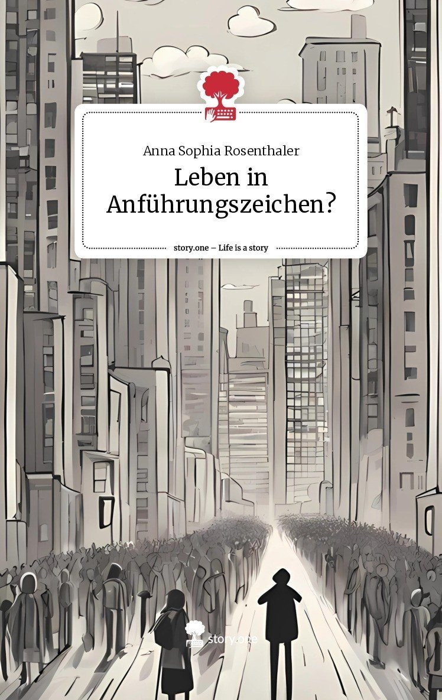
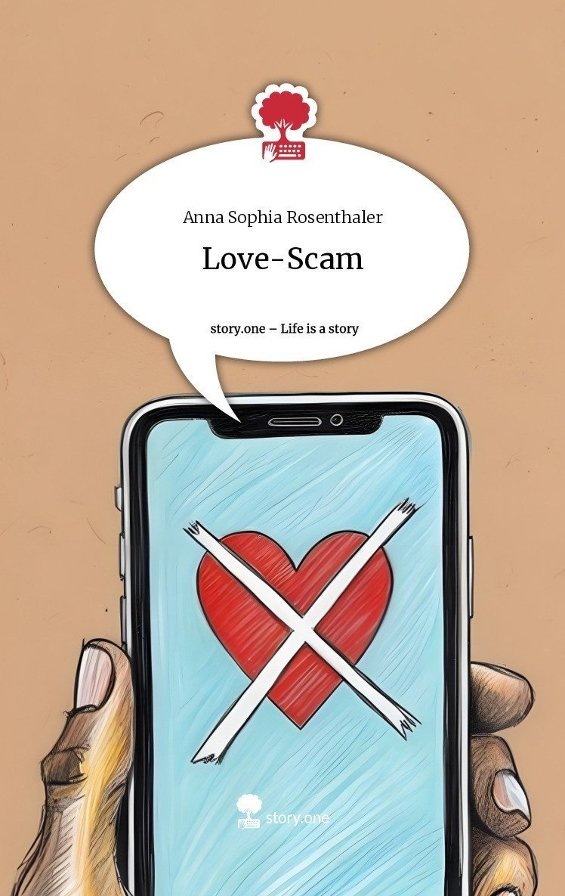
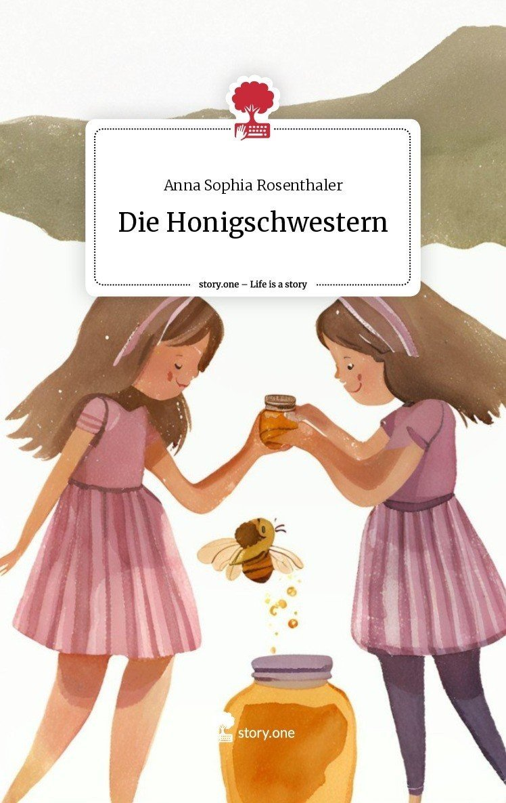
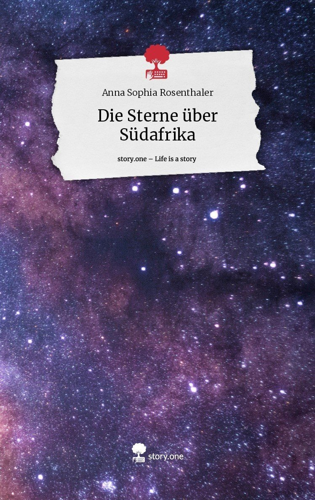
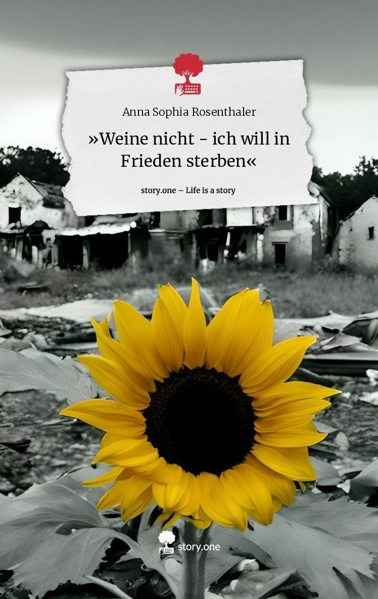
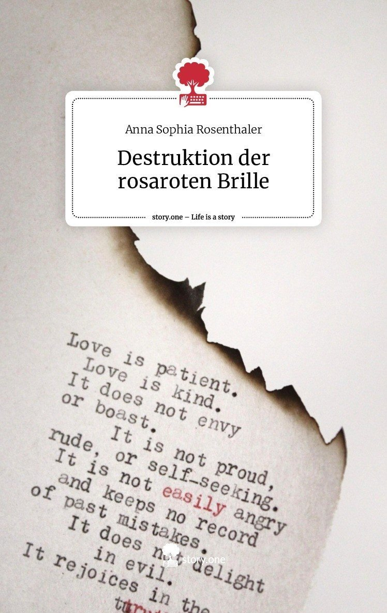
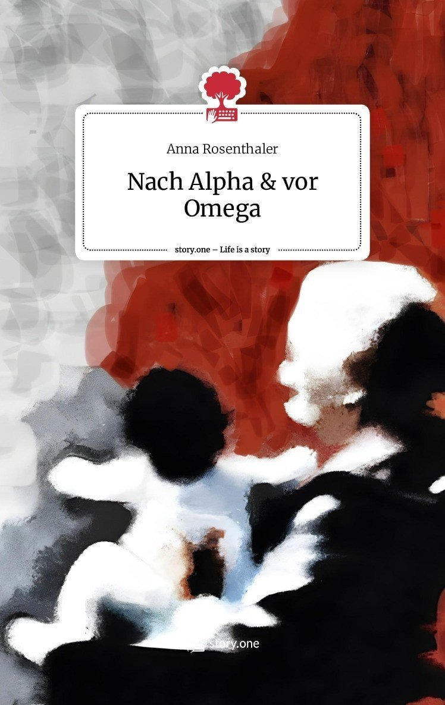
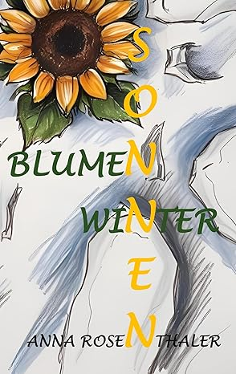

Leben in Anführungszeichen
Wie lebt es sich in unserer Gesellschaft? Diese Anthologie beleuchtet Schicksale, erzählt Geschichten und fragt nach den Erfahrungen von Menschen in einer komplexen Welt. Es geht um das Spannungsfeld zwischen gesellschaftlichen Zwängen und individuellen Lebensentwürfen, um erfüllte und unerfüllte Wünsche und die Folgen von Anpassung oder Widerstand. Dabei stehen nicht nur die Herausforderungen und Schattenseiten im Mittelpunkt, sondern auch die positiven Momente wie persönliche Erfolge, Selbstfindung und Glück. Selbst die leisen, aber tiefgreifenden Veränderungen im Alltag spielen eine Rolle. Ein facettenreiches Werk über das Leben, für alle, die sich fragen, wohin die Reise geht und die den Wandel mitgestalten wollen – erzählt von Menschen für Menschen.

Love-Scam
Wenn Liebe zum Betrug wird … … geht Geld verloren … werden Herzen gebrochen … werden Beziehungen beendet … stirbt die Hoffnung … wird erpresst … wird Vertrauen missbraucht … verliert das Opfer sich selbst. Eine Geschichte über eine Internet-Liebe und wie diese ausartete. Mit Hinweisen auf Schutzmöglichkeiten und Anlaufstellen..

Die Honigschwestern
— Ein Kinderbuch der leckeren Art — Begleite die Honigschwestern auf ihren Abenteuern! Egal, was die beiden an einem aufregenden Tag erleben, sie halten immer zusammen, denn mit viel Mut und Honig ist bekanntlich alles möglich! Ab 7 Jahren

Die Sterne über Südafrika
— Eine kurze Geschichte über das ganze Leben — Madu und Taina kamen aus unterschiedlichen sozialen Schichten. Dennoch begaben sie sich auf eine gemeinsame Reise und wuchsen immer mehr zusammen. Eine Reise, auf der sie sich selbst fanden und für das scheinbar Unerreichbare kämpften. In diesem Buch wird ein idealisiertes Abenteuer beschrieben, das dazu ermutigen soll, den eigenen Träumen zu folgen, und das die Möglichkeit aufzeigt, mit viel Mut und Geduld alles erreichen zu können. Denn wenn das Leben einfach wäre, wären wir alle Feiglinge.

"Weine nicht - ich will in Frieden sterben"
Liakada – ein Land, das einst zahlreiche Sonnenstunden genoss und von einer reichen Tiervielfalt beschenkt wurde. Die nach Strandrosen duftende Luft harmonierte mit den am Ufer brechenden Wellen. Eine leichte Brise war vom Meer aus wahrzunehmen, die den Duft bis tief ins Landesinnere verschleppte. Bis zu dem Zeitpunkt, an dem die Menschen kamen. Dieses Buch berichtet vom Leben im Krieg und von den unzähligen Verlusten, die das Individuum einstecken muss, ohne die Wahl zu haben.

Destruktion der rosaroten Brille
Das Buch berichtet an 13 verschiedenen Tagen über eine verzwickte Beziehung in der sich die Protagonistin mit Händen und Füßen wehrt, das Schlechte darin zu sehen. Tiefste Emotionen des Unzulänglichkeitsgefühls und der Einsamkeit werden aufgeworfen. Ein Weg, der von Hürden und Frustration geprägt ist und den niemand anderer beschreiten kann, außer die Protagonistin selbst.

Nach Alpha & vor Omega
Darf ich vorstellen – das Leben. Alles, was nach Alpha, dem Anfang, und vor Omega, dem Ende, geschieht. Von der Geburt bis zum Tod wird jeder Mensch von Höhen und Tiefen begleitet. Für den Einzelnen kann eine Kleinigkeit bereits das Leben auf den Kopf stellen, ihm alles geben, was er sich jemals gewünscht hat, aber auch alles nehmen. Dieses Buch berichtet deshalb über Herausforderungen des alltäglichen Lebens, unter anderem dem Erwachsen- und Altwerden und behandelt Themen, über die immer noch viel zu wenig gesprochen wird.

Sonnenblumenwinter
Nach Jahren verlässt Lilja das Jugendheim in der Schweiz, um zu ihrer Tante nach Island zu ziehen. Damals weiß sie noch nicht, dass diese einen bösen Plan hat, der sie auf eine gewagte Mission führt. Das Mädchen entdeckt ihre Fähigkeiten und lernt, mit ihren magischen Perlen umzugehen. Sie schließt sich einer Gruppe von Jungen an, die sie aufnehmen, um die gefährlichste aller Perlen, die Suizidperle, zu zerstören. Nach ihrem Leben als Waise ist das für Lilja eine Herausforderung, die ihre ganze Kraft fordert, wäre da nicht zusätzlich Amaru, der ihr den Verstand raubt.
»Es ist bald soweit, Prinzessin, dann ist unser Pakt besiegelt. Du kannst mir nicht mehr entkommen, stehst längst unter meinem Bann. Du lässt mich mit dir alles machen, was ich will, dein Körper gehört mir.«
Die Wahrheit hinter dem Feuer
Jahrelang abgeschottet und emotional misshandelt. Das Leben von Yoash und Saphira sieht düster und trostlos aus, gefangen gehalten von ihren Eltern, um zu arbeiten und Gott zu gehorchen. Yoash schafft es nach langer Zeit, zu seinen Großeltern nach Swindon wegzulaufen, um mit einem Trick auch Saphira ein halbwegs normales Leben zu ermöglichen. Gemeinsam erfolgt ein Kampf um die Freiheit, die schwerer zu erreichen ist, als es anfangs scheint, denn das neue Leben in der Außenwelt bringt nicht nur Gutes mit sich.

Der Preis einer Hochzeit
Nadine lernt durch Zufall Marco kennen und verliebt sich augenblicklich in ihn. Doch er ist ein Weltlicher, ihre Liebe dürfte nie existieren. Nadine gibt jedoch nicht auf und vertraut sich Marco an. Mit gemischten Gefühlen beginnt eine innige Beziehung zwischen den beiden. Für Nadine steht fest, dass sie Marco heiraten wird. Zwei Liebende - zwei unterschiedliche Familien und deren Glauben. Die Entscheidung für die Liebe bedeutet eine Entscheidung gegen die Familie. Was ist der Preis für Freiheit, eigene Wünsche oder gar eine Hochzeit?

Leona: Das Flüstern im Sturm